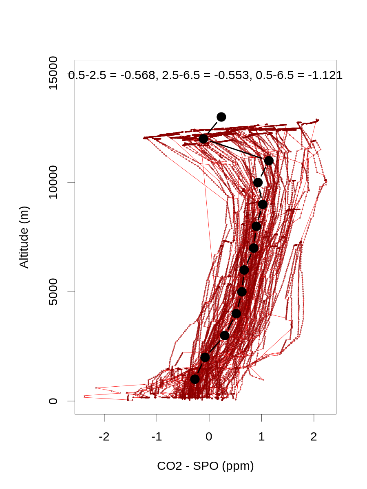
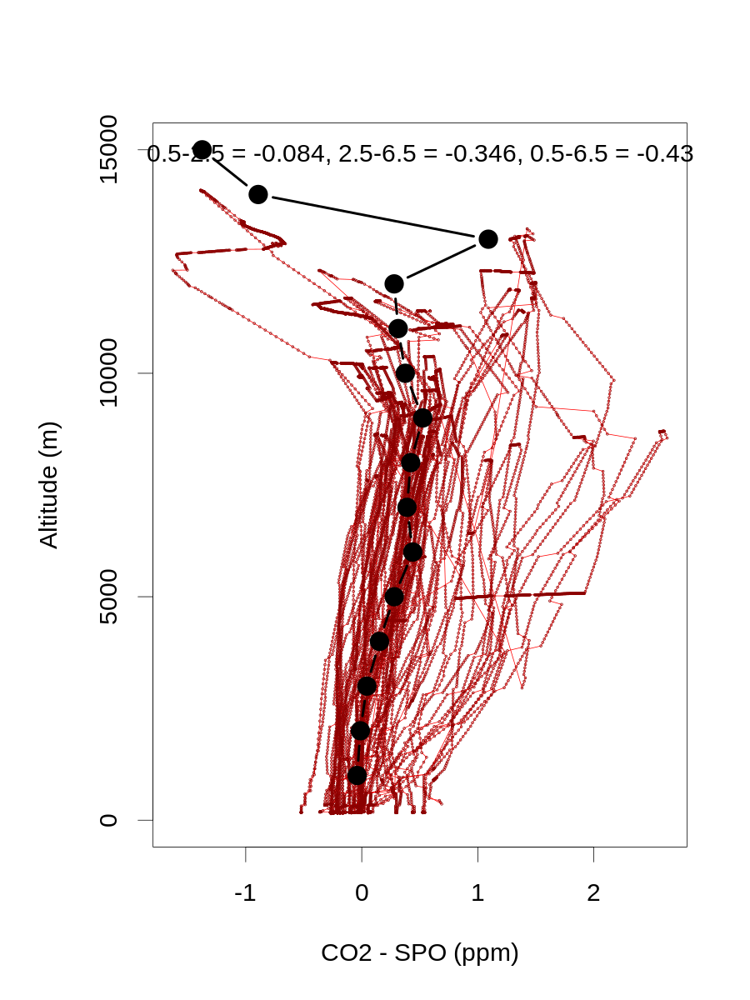

Process airborne model output¶
R program to process Southern Ocean model aircraft concentrations
have to run process_surface_models.ipynb first to save SPO NOAA in situ record
library('ncdf4')
library('yaml')
project_tmpdir_obs = read_yaml('../_config_calc.yml')$project_tmpdir_obs
model_data_dir = read_yaml('../_config_calc.yml')$model_data_dir
username = Sys.info()['user']
project_tmpdir_obs = gsub('\\{\\{env\\[\'USER\'\\]\\}\\}', username, project_tmpdir_obs)
model_data_dir = gsub('\\{\\{env\\[\'USER\'\\]\\}\\}', username, model_data_dir)
# Options:
filtbl=T # using manual filters for strong/recent continental influence
gvp60dir='obspack_co2_1_GLOBALVIEWplus_v6.0_2020-09-11/data/nc'
gvp42dir='obspack_co2_1_GLOBALVIEWplus_v4.2.2_2019-06-05/data/nc'
atom40dir='obspack_co2_1_ATom_v4.0_2020-04-06/data/nc'
Loop on models¶
bbsnames=c('CAMSv20r1','CT2017','CT2019B','CTE2018','CTE2020','MIROC','CarboScopeAdjSO','CarboScopeSC','CarboScope','TM5pCO2')
mclnames=c('CAMSv20r1','CT2017','CT2019B','CTE2018','CTE2020','MIROC','s99oc_ADJocI40S_v2020','s99oc_SOCCOM_v2020','s99oc_v2020','TM5-Flux-')
for(model in bbsnames){
if(model=='CT2017'){
modobspacks='obspack_CARBONTRACKER_CT2017'
cases=c(1:5)
} else if(model=='CT2019B'){
modobspacks='obspack_GLOBALVIEWplus_v5.0'
cases=c(1:5)
} else if(model=='CTE2018'){
modobspacks=c('obspack_ATom_v4.0','obspack_GLOBALVIEWplus_v5.0')
cases=c(1,3:5) # do not need BG
} else if(model=='CTE2020'){
modobspacks='obspack_GLOBALVIEWplus_v5.0'
cases=c(1,3:5) # do not need BG
} else if(model=='CarboScope'){
modobspacks=c('obspack_GLOBALVIEWplus_v4.2.2','obspack_ATom_v4.0')
cases=c(1,3:5) # no BG
} else if(model=='CarboScopeAdjSO'){
modobspacks=c('obspack_GLOBALVIEWplus_v4.2.2','obspack_ATom_v4.0')
cases=c(1,3:5) # no BG
} else if(model=='CarboScopeSC'){
modobspacks=c('obspack_GLOBALVIEWplus_v4.2.2','obspack_ATom_v4.0')
cases=c(1,3:5) # no BG
} else if(model=='MIROC'){
modobspacks=c('obspack_GLOBALVIEWplus_v5.0','obspack_ATom_v4.0')
mirocyears=seq(1996,2019)
cases=c(1,3:5) # do not need BG
} else if(model=='CAMSv20r1'){ # flat text files for all data
modobspacks=c('obspack_GLOBALVIEWplus_v6.0')
modobspacktotfile='v20r1_obspack6.txt'
modobspacklndfile='v20r1_obspack6_testland.txt'
modobspackocefile='v20r1_obspack6_testocean.txt'
modobspackfosfile='v20r1_obspack6_testffoss.txt'
cases=c(1,3:5)
} else if(model=='TM5pCO2'){
modobspacks='obspack_GLOBALVIEWplus_v5.0'
cases=c(6:9)
}
# Loop on cases
for(case in cases){
# CT, CTE, CAMS, MIROC, CarboScope (comps not used by CAMS or CarboScope)
if(case==1){ comps=c(1,1,1,1,1); subdir='' } # bg, ff, ocean, bio, and fires (all)
if(case==2){ comps=c(1,0,0,0,0); subdir='/BG' } # bg only
if(case==3){ comps=c(0,1,0,0,0); subdir='/FF' } # ff only
if(case==4){ comps=c(0,0,1,0,0); subdir='/OCEAN' } # ocean only
if(case==5){ comps=c(0,0,0,1,1); subdir='/LAND' } # bio, and fires only
# TM5pCO2
if(case==6){ run='mrf' }
if(case==7){ run='m0f' }
if(case==8){ run='mwf' }
if(case==9){ run='mmf' }
#if(case>5){ subdir=paste('/',toupper(run),sep='') }
if(case>5){
subdir=''
mclname=paste(mclnames[which(bbsnames==model)],run,sep='')
} else {
mclname=mclnames[which(bbsnames==model)]
}
# Specify model subdirectory
modobspackdir=paste(model_data_dir,'/',mclname,sep='')
print(paste(mclname,subdir,sep=''))
# read in ORCAS, HIPPO, and ATom data
if(substr(model,1,10)!='CarboScope'&model!='TM5pCO2'&model!='CAMSv20r1'){
orcnc=nc_open(paste(modobspackdir,'/simulated-obs/co2_orc_aircraft-insitu_3_allvalid-merge10.nc',sep=''))
tomnc=nc_open(paste(modobspackdir,'/simulated-obs/co2_tom_aircraft-insitu_1_allvalid.nc',sep=''))
hipnc=nc_open(paste(modobspackdir,'/simulated-obs/co2_hip_aircraft-insitu_59_allvalid.nc',sep=''))
}
if(model=='CT2017'|model=='CT2019B'){
orcdat=data.frame(cbind(t(ncvar_get(orcnc,'time_components')),ncvar_get(orcnc,'altitude'),ncvar_get(orcnc,'latitude'),ncvar_get(orcnc,'longitude'),ncvar_get(orcnc,'model_bg')*1E6),ncvar_get(orcnc,'obspack_id')) ; colnames(orcdat)=c('year','mon','day','hour','min','sec','alt','lat','lon','co2','obspack_id') # model_bg read in as dummy variable
tomdat=data.frame(cbind(t(ncvar_get(tomnc,'time_components')),ncvar_get(tomnc,'altitude'),ncvar_get(tomnc,'latitude'),ncvar_get(tomnc,'longitude'),ncvar_get(tomnc,'model_bg')*1E6),ncvar_get(tomnc,'obspack_id')) ; colnames(tomdat)=c('year','mon','day','hour','min','sec','alt','lat','lon','co2','obspack_id')
hipdat=data.frame(cbind(t(ncvar_get(hipnc,'time_components')),ncvar_get(hipnc,'altitude'),ncvar_get(hipnc,'latitude'),ncvar_get(hipnc,'longitude'),ncvar_get(hipnc,'model_bg')*1E6),ncvar_get(hipnc,'obspack_id')) ; colnames(hipdat)=c('year','mon','day','hour','min','sec','alt','lat','lon','co2','obspack_id')
orcdat$co2=(ncvar_get(orcnc,'model_bg')*comps[1]+ncvar_get(orcnc,'model_ff')*comps[2]+ncvar_get(orcnc,'model_ocean')*comps[3]+ncvar_get(orcnc,'model_bio')*comps[4]+ncvar_get(orcnc,'model_fires')*comps[5])*1E6 # replace dummy variable with selected component
tomdat$co2=(ncvar_get(tomnc,'model_bg')*comps[1]+ncvar_get(tomnc,'model_ff')*comps[2]+ncvar_get(tomnc,'model_ocean')*comps[3]+ncvar_get(tomnc,'model_bio')*comps[4]+ncvar_get(tomnc,'model_fires')*comps[5])*1E6
hipdat$co2=(ncvar_get(hipnc,'model_bg')*comps[1]+ncvar_get(hipnc,'model_ff')*comps[2]+ncvar_get(hipnc,'model_ocean')*comps[3]+ncvar_get(hipnc,'model_bio')*comps[4]+ncvar_get(hipnc,'model_fires')*comps[5])*1E6
} else if(model=='CTE2018'|model=='CTE2020'){
orcdat=data.frame(cbind(t(ncvar_get(orcnc,'time_components')),ncvar_get(orcnc,'altitude'),ncvar_get(orcnc,'latitude'),ncvar_get(orcnc,'longitude'),ncvar_get(orcnc,'modelsamplesmean')*1E6),ncvar_get(orcnc,'obspack_id')) ; colnames(orcdat)=c('year','mon','day','hour','min','sec','alt','lat','lon','co2','obspack_id') # modelsamplesmean read in as a dummy variable
tomdat=data.frame(cbind(t(ncvar_get(tomnc,'time_components')),ncvar_get(tomnc,'altitude'),ncvar_get(tomnc,'latitude'),ncvar_get(tomnc,'longitude'),ncvar_get(tomnc,'modelsamplesmean')*1E6),ncvar_get(tomnc,'obspack_id')) ; colnames(tomdat)=c('year','mon','day','hour','min','sec','alt','lat','lon','co2','obspack_id')
hipdat=data.frame(cbind(t(ncvar_get(hipnc,'time_components')),ncvar_get(hipnc,'altitude'),ncvar_get(hipnc,'latitude'),ncvar_get(hipnc,'longitude'),ncvar_get(hipnc,'modelsamplesmean')*1E6),ncvar_get(hipnc,'obspack_id')) ; colnames(hipdat)=c('year','mon','day','hour','min','sec','alt','lat','lon','co2','obspack_id')
orcdat$co2=(ncvar_get(orcnc,'modelsamplesensemble')[1,]*comps[1]+ncvar_get(orcnc,'modelsamplesensemble')[2,]*comps[2]+ncvar_get(orcnc,'modelsamplesensemble')[4,]*comps[3]+ncvar_get(orcnc,'modelsamplesensemble')[3,]*comps[4]+ncvar_get(orcnc,'modelsamplesensemble')[5,]*comps[5])*1E6 # replace modelsamplesmean with selected component
orcdat$co2[orcdat$co2>1E3]=NA # 1000 ppm
orcdat$co2[orcdat$co2<(-1E3)]=NA # -1000 ppm
tomdat$co2=(ncvar_get(tomnc,'modelsamplesensemble')[1,]*comps[1]+ncvar_get(tomnc,'modelsamplesensemble')[2,]*comps[2]+ncvar_get(tomnc,'modelsamplesensemble')[4,]*comps[3]+ncvar_get(tomnc,'modelsamplesensemble')[3,]*comps[4]+ncvar_get(tomnc,'modelsamplesensemble')[5,]*comps[5])*1E6
tomdat$co2[tomdat$co2>1E3]=NA
tomdat$co2[tomdat$co2<(-1E3)]=NA
if(model=='CTE2018') tomdat=tomdat[ncvar_get(tomnc,'time_decimal')<2018,] # files have zeros for 2018
hipdat$co2=(ncvar_get(hipnc,'modelsamplesensemble')[1,]*comps[1]+ncvar_get(hipnc,'modelsamplesensemble')[2,]*comps[2]+ncvar_get(hipnc,'modelsamplesensemble')[4,]*comps[3]+ncvar_get(hipnc,'modelsamplesensemble')[3,]*comps[4]+ncvar_get(hipnc,'modelsamplesensemble')[5,]*comps[5])*1E6
hipdat$co2[hipdat$co2>1E3]=NA
hipdat$co2[hipdat$co2<(-1E3)]=NA
} else if(model=='CAMSv20r1'){
obsobspackdir=paste(project_tmpdir_obs,'/',gvp60dir,sep='') # read in actual data files from same GV+ version, then swap in from single CAMS file
orcnc=nc_open(paste(obsobspackdir,'/co2_orc_aircraft-insitu_3_allvalid-merge10.nc',sep=''))
tomnc=nc_open(paste(obsobspackdir,'/co2_tom_aircraft-insitu_1_allvalid.nc',sep=''))
hipnc=nc_open(paste(obsobspackdir,'/co2_hip_aircraft-insitu_59_allvalid.nc',sep=''))
if(case==1){
modobspackfile=paste(modobspackdir,'/simulated-obs',subdir,'/',modobspacktotfile,sep='')
} else if(case==3){
modobspackfile=paste(modobspackdir,'/simulated-obs',subdir,'/',modobspackfosfile,sep='')
} else if(case==4){
modobspackfile=paste(modobspackdir,'/simulated-obs',subdir,'/',modobspackocefile,sep='')
} else if(case==5){
modobspackfile=paste(modobspackdir,'/simulated-obs',subdir,'/',modobspacklndfile,sep='')
}
orcdat=data.frame(cbind(t(ncvar_get(orcnc,'time_components')),ncvar_get(orcnc,'altitude'),ncvar_get(orcnc,'latitude'),ncvar_get(orcnc,'longitude'),ncvar_get(orcnc,'value')*1E6),ncvar_get(orcnc,'obspack_id')) ; colnames(orcdat)=c('year','mon','day','hour','min','sec','alt','lat','lon','co2','obspack_id')
system('rm cams_orcas_data_temp.txt')
system(paste('grep co2_orc_aircraft-insitu_3_allvalid-merge10 ',modobspackfile,' > cams_orcas_data_temp.txt',sep=''))
camsin=read.table('cams_orcas_data_temp.txt',stringsAsFactors=F) # obspackid, posterior co2, flag (all 0s)
orcdat$co2=rep(NA,nrow(orcdat)) # remove old
orcdat[is.element(orcdat$obspack_id,camsin[,1]),'co2']=camsin[match(orcdat$obspack_id[is.element(orcdat$obspack_id,camsin[,1])],camsin[,1]),2]
tomdat=data.frame(cbind(t(ncvar_get(tomnc,'time_components')),ncvar_get(tomnc,'altitude'),ncvar_get(tomnc,'latitude'),ncvar_get(tomnc,'longitude'),ncvar_get(tomnc,'value')*1E6),ncvar_get(tomnc,'obspack_id')) ; colnames(tomdat)=c('year','mon','day','hour','min','sec','alt','lat','lon','co2','obspack_id')
system('rm cams_atom_data_temp.txt')
system(paste('grep co2_tom_aircraft-insitu_1_allvalid ',modobspackfile,' > cams_atom_data_temp.txt',sep=''))
camsin=read.table('cams_atom_data_temp.txt',stringsAsFactors=F) # obspackid, posterior co2, flag (all 0s)
tomdat$co2=rep(NA,nrow(tomdat)) # remove old
tomdat[is.element(tomdat$obspack_id,camsin[,1]),'co2']=camsin[match(tomdat$obspack_id[is.element(tomdat$obspack_id,camsin[,1])],camsin[,1]),2]
hipdat=data.frame(cbind(t(ncvar_get(hipnc,'time_components')),ncvar_get(hipnc,'altitude'),ncvar_get(hipnc,'latitude'),ncvar_get(hipnc,'longitude'),ncvar_get(hipnc,'value')*1E6),ncvar_get(hipnc,'obspack_id')) ; colnames(hipdat)=c('year','mon','day','hour','min','sec','alt','lat','lon','co2','obspack_id')
system('rm cams_hippo_data_temp.txt')
system(paste('grep co2_hip_aircraft-insitu_59_allvalid ',modobspackfile,' > cams_hippo_data_temp.txt',sep=''))
camsin=read.table('cams_hippo_data_temp.txt',stringsAsFactors=F) # obspackid, posterior co2, flag (all 0s)
hipdat$co2=rep(NA,nrow(hipdat)) # remove old
## not all v4.2.1 ids are in reported CAMS output, but all reported CAMS output is in v4.2.1
hipdat[is.element(hipdat$obspack_id,camsin[,1]),'co2']=camsin[match(hipdat$obspack_id[is.element(hipdat$obspack_id,camsin[,1])],camsin[,1]),2]
} else if(substr(model,1,5)=='MIROC'){
orcdat=data.frame(cbind(t(ncvar_get(orcnc,'time_components')),ncvar_get(orcnc,'altitude'),ncvar_get(orcnc,'latitude'),ncvar_get(orcnc,'longitude'),ncvar_get(orcnc,'Observation')*1E6),ncvar_get(orcnc,'obspack_id')) ; colnames(orcdat)=c('year','mon','day','hour','min','sec','alt','lat','lon','co2','obspack_id')
tomdat=data.frame(cbind(t(ncvar_get(tomnc,'time_components')),ncvar_get(tomnc,'altitude'),ncvar_get(tomnc,'latitude'),ncvar_get(tomnc,'longitude'),ncvar_get(tomnc,'Observation')*1E6),ncvar_get(tomnc,'obspack_id')) ; colnames(tomdat)=c('year','mon','day','hour','min','sec','alt','lat','lon','co2','obspack_id')
hipdat=data.frame(cbind(t(ncvar_get(hipnc,'time_components')),ncvar_get(hipnc,'altitude'),ncvar_get(hipnc,'latitude'),ncvar_get(hipnc,'longitude'),ncvar_get(hipnc,'Observation')*1E6),ncvar_get(hipnc,'obspack_id')) ; colnames(hipdat)=c('year','mon','day','hour','min','sec','alt','lat','lon','co2','obspack_id')
orcdat$co2=((ncvar_get(orcnc,'CO2FF'))*comps[2]+(ncvar_get(orcnc,'CO2Ocn_apos'))*comps[3]+(ncvar_get(orcnc,'CO2Bio_apos'))*comps[4]) # replace obs with model# 2 = FF, 3 = ocean, 4 = bio
tomdat$co2=((ncvar_get(tomnc,'CO2FF'))*comps[2]+(ncvar_get(tomnc,'CO2Ocn_apos'))*comps[3]+(ncvar_get(tomnc,'CO2Bio_apos'))*comps[4]) # replace obs with model # 2 = FF, 3 = ocean, 4 = bio
hipdat$co2=((ncvar_get(hipnc,'CO2FF'))*comps[2]+(ncvar_get(hipnc,'CO2Ocn_apos'))*comps[3]+(ncvar_get(hipnc,'CO2Bio_apos'))*comps[4]) # replace obs with model # 2 = FF, 3 = ocean, 4 = bio
if(case==1){
orcdat$co2=orcdat$co2-as.numeric(ncvar_get(orcnc,'CO2bias_apos')) # 1391.02
tomdat$co2=tomdat$co2-as.numeric(ncvar_get(tomnc,'CO2bias_apos')) # 1391.02
hipdat$co2=hipdat$co2-as.numeric(ncvar_get(hipnc,'CO2bias_apos')) # 1391.02
}
} else if(substr(model,1,10)=='CarboScope'){
orcdatin=read.table(paste(modobspackdir,'/simulated-obs',subdir,'/HaORCMERGE10xo.co2.ts',sep=''))
orcdat=orcdatin[,c(2:7,10,8,9,13)] ; colnames(orcdat)=c('year','mon','day','hour','min','sec','alt','lat','lon','co2')
tomdatin=read.table(paste(modobspackdir,'/simulated-obs',subdir,'/HaTOMco.co2.ts',sep=''))
tomdat=tomdatin[,c(2:7,10,8,9,13)] ; colnames(tomdat)=c('year','mon','day','hour','min','sec','alt','lat','lon','co2')
hipdatin=read.table(paste(modobspackdir,'/simulated-obs',subdir,'/HaHIPxo.co2.ts',sep=''))
hipdat=hipdatin[,c(2:7,10,8,9,13)] ; colnames(hipdat)=c('year','mon','day','hour','min','sec','alt','lat','lon','co2')
# need to get obspack_id from row matching obs obspack
obsobspackdir=paste(project_tmpdir_obs,'/',gvp42dir,sep='') # read in actual data files from same GV+ version, then swap in from single CAMS file
orcnc=nc_open(paste(obsobspackdir,'/co2_orc_aircraft-insitu_3_allvalid-merge10.nc',sep=''))
orcdat$obspack_id=ncvar_get(orcnc,'obspack_id')
hipnc=nc_open(paste(obsobspackdir,'/co2_hip_aircraft-insitu_59_allvalid.nc',sep=''))
hipdat$obspack_id=ncvar_get(hipnc,'obspack_id')
obsobspackdir=paste(project_tmpdir_obs,'/',atom40dir,sep='') # ATom file using ATom_v4.0 obspack
tomnc=nc_open(paste(obsobspackdir,'/co2_tom_aircraft-insitu_1_allvalid.nc',sep=''))
tomdat$obspack_id=ncvar_get(tomnc,'obspack_id')
} else if(model=='TM5pCO2'){
orcnc=nc_open(paste(modobspackdir,'/simulated-obs/co2_orc_aircraft-insitu_3_allvalid-merge10.nc',sep=''))
orcdat=data.frame(cbind(t(ncvar_get(orcnc,'time_components')),ncvar_get(orcnc,'altitude'),ncvar_get(orcnc,'latitude'),ncvar_get(orcnc,'longitude'),ncvar_get(orcnc,'model_ocean')*1E6),ncvar_get(orcnc,'obspack_id')) ; colnames(orcdat)=c('year','mon','day','hour','min','sec','alt','lat','lon','co2','obspack_id')
tomnc=nc_open(paste(modobspackdir,'/simulated-obs/co2_tom_aircraft-insitu_1_allvalid.nc',sep=''))
tomdat=data.frame(cbind(t(ncvar_get(tomnc,'time_components')),ncvar_get(tomnc,'altitude'),ncvar_get(tomnc,'latitude'),ncvar_get(tomnc,'longitude'),ncvar_get(tomnc,'model_ocean')*1E6),ncvar_get(tomnc,'obspack_id')) ; colnames(tomdat)=c('year','mon','day','hour','min','sec','alt','lat','lon','co2','obspack_id')
hipnc=nc_open(paste(modobspackdir,'/simulated-obs/co2_hip_aircraft-insitu_59_allvalid.nc',sep=''))
hipdat=data.frame(cbind(t(ncvar_get(hipnc,'time_components')),ncvar_get(hipnc,'altitude'),ncvar_get(hipnc,'latitude'),ncvar_get(hipnc,'longitude'),ncvar_get(hipnc,'model_ocean')*1E6),ncvar_get(hipnc,'obspack_id')) ; colnames(hipdat)=c('year','mon','day','hour','min','sec','alt','lat','lon','co2','obspack_id')
}
nc_close(orcnc)
nc_close(hipnc)
nc_close(tomnc)
# merge in camp, flt, prof, pressure, theta, strat from aircraft_obspack_merge.ipynb output
orcdat=cbind(orcdat,matrix(NA,nrow(orcdat),5)); colnames(orcdat)=c('year','mon','day','hour','min','sec','alt','lat','lon','co2','obspack_id','flt','prof','pressure','theta','strat')
tomdat=cbind(tomdat,matrix(NA,nrow(tomdat),6)); colnames(tomdat)=c('year','mon','day','hour','min','sec','alt','lat','lon','co2','obspack_id','camp','flt','prof','pressure','theta','strat')
hipdat=cbind(hipdat,matrix(NA,nrow(hipdat),6)); colnames(hipdat)=c('year','mon','day','hour','min','sec','alt','lat','lon','co2','obspack_id','camp','flt','prof','pressure','theta','strat')
for(op in modobspacks){
if(op=='obspack_GLOBALVIEWplus_v5.0'){ # v5.0 is lacking dashes at end
orcdat$obspack_id = gsub("--", "", orcdat$obspack_id); orcdat$obspack_id = gsub("-$", "", orcdat$obspack_id) # removes any number of ----s at end of id
tomdat$obspack_id = gsub("--", "", tomdat$obspack_id); tomdat$obspack_id = gsub("-$", "", tomdat$obspack_id)
hipdat$obspack_id = gsub("--", "", hipdat$obspack_id); hipdat$obspack_id = gsub("-$", "", hipdat$obspack_id)
}
if(file.exists(paste('HIPPO_',op,'_merge.txt',sep=''))){ # obspack_ATom_v4.0 is ATom only
ophip=read.table(paste('HIPPO_',op,'_merge.txt',sep=''),header=T,stringsAsFactors=F)
hipdat[is.element(hipdat$obspack_id,ophip$obspack_id),12:17]=ophip[match(hipdat$obspack_id[is.element(hipdat$obspack_id,ophip$obspack_id)],ophip$obspack_id),7:12]
}
if(file.exists(paste('ORCAS_',op,'_merge.txt',sep=''))){ # obspack_ATom_v4.0 is ATom only
oporc=read.table(paste('ORCAS_',op,'_merge.txt',sep=''),header=T,stringsAsFactors=F)
orcdat[is.element(orcdat$obspack_id,oporc$obspack_id),12:16]=oporc[match(orcdat$obspack_id[is.element(orcdat$obspack_id,oporc$obspack_id)],oporc$obspack_id),7:11]
}
if(file.exists(paste('ATOM_',op,'_merge.txt',sep=''))){ # obspack_ATom_v4.0 is ATom only
optom=read.table(paste('ATOM_',op,'_merge.txt',sep=''),header=T,stringsAsFactors=F)
tomdat[is.element(tomdat$obspack_id,optom$obspack_id),12:17]=optom[match(tomdat$obspack_id[is.element(tomdat$obspack_id,optom$obspack_id)],optom$obspack_id),7:12]
}
}
#print(paste('Missing HIPPO merged camp, flt, prof, pressure, theta, strat =',sum(is.na(hipdat$camp)),' out of',nrow(hipdat)))
#print(paste('Missing ORCAS merged flt, prof, pressure, theta, strat =',sum(is.na(orcdat$flt)),' out of',nrow(orcdat)))
#print(paste('Missing ATom merged camp, flt, prof, pressure, theta, strat =',sum(is.na(tomdat$camp)),' out of',nrow(tomdat)))
# set time variables
orcdatdt=as.POSIXlt(ISOdatetime(orcdat$year,orcdat$mon,orcdat$day,orcdat$hour,orcdat$min,orcdat$sec,tz='UTC'))
tomdatdt=as.POSIXlt(ISOdatetime(tomdat$year,tomdat$mon,tomdat$day,tomdat$hour,tomdat$min,tomdat$sec,tz='UTC'))
hipdatdt=as.POSIXlt(ISOdatetime(hipdat$year,hipdat$mon,hipdat$day,hipdat$hour,hipdat$min,hipdat$sec,tz='UTC'))
#print('Before filtering model aircraft files')
#print(dim(orcdat))
#print(dim(hipdat))
#print(dim(tomdat))
# filter out BL data over land
filtfile=paste(project_tmpdir_obs,'/orcas_xsect_filt_datetime.txt',sep='')
ints=read.table(filtfile,header=T,stringsAsFactors=F)
intsdtstart=as.POSIXlt(ISOdatetime(ints$startyear,ints$startmon,ints$startday,ints$starthour,ints$startmin,ints$startsec,tz='UTC'))
intsdtstop=as.POSIXlt(ISOdatetime(ints$stopyear,ints$stopmon,ints$stopday,ints$stophour,ints$stopmin,ints$stopsec,tz='UTC'))
if(filtbl){
blfilt=rep(T,nrow(orcdat))
for(i in c(1:nrow(ints))){
blfilt[difftime(orcdatdt,intsdtstart[i])>0&difftime(orcdatdt,intsdtstop[i])<0]=F
}
orcdatdt=orcdatdt[blfilt]
orcdat=orcdat[blfilt,]
}
filtfile=paste(project_tmpdir_obs,'/atom_xsect_filt_datetime.txt',sep='')
ints=read.table(filtfile,header=T,stringsAsFactors=F)
intsdtstart=as.POSIXlt(ISOdatetime(ints$startyear,ints$startmon,ints$startday,ints$starthour,ints$startmin,ints$startsec,tz='UTC'))
intsdtstop=as.POSIXlt(ISOdatetime(ints$stopyear,ints$stopmon,ints$stopday,ints$stophour,ints$stopmin,ints$stopsec,tz='UTC'))
if(filtbl){
blfilt=rep(T,nrow(tomdat))
for(i in c(1:nrow(ints))){
blfilt[difftime(tomdatdt,intsdtstart[i])>0&difftime(tomdatdt,intsdtstop[i])<0]=F
}
tomdatdt=tomdatdt[blfilt]
tomdat=tomdat[blfilt,]
}
filtfile=paste(project_tmpdir_obs,'/hippo_xsect_filt_datetime.txt',sep='')
ints=read.table(filtfile,header=T,stringsAsFactors=F)
intsdtstart=as.POSIXlt(ISOdatetime(ints$startyear,ints$startmon,ints$startday,ints$starthour,ints$startmin,ints$startsec,tz='UTC'))
intsdtstop=as.POSIXlt(ISOdatetime(ints$stopyear,ints$stopmon,ints$stopday,ints$stophour,ints$stopmin,ints$stopsec,tz='UTC'))
if(filtbl){
blfilt=rep(T,nrow(hipdat))
for(i in c(1:nrow(ints))){
blfilt[difftime(hipdatdt,intsdtstart[i])>0&difftime(hipdatdt,intsdtstop[i])<0]=F
}
hipdatdt=hipdatdt[blfilt]
hipdat=hipdat[blfilt,]
}
#print('After filtering model aircraft files')
#print(dim(orcdat))
#print(dim(hipdat))
#print(dim(tomdat))
# read in model NOAA in situ record from process_surface_models.ipynb
sponoaais=read.table(paste('../data/simulated-obs/',mclname,subdir,'/SPO_NOAA_in_situ.txt',sep=''),header=T,stringsAsFactors=F)
sponoaaisdt=ISOdatetime(sponoaais$year,sponoaais$mon,sponoaais$day,sponoaais$hour,sponoaais$min,sponoaais$sec,tz='UTC')
# subtract SPO
orcdat$co2mspo=orcdat$co2-approx(as.POSIXct(sponoaaisdt),sponoaais$co2,as.POSIXct(orcdatdt))$y
tomdat$co2mspo=tomdat$co2-approx(as.POSIXct(sponoaaisdt),sponoaais$co2,as.POSIXct(tomdatdt))$y
hipdat$co2mspo=hipdat$co2-approx(as.POSIXct(sponoaaisdt),sponoaais$co2,as.POSIXct(hipdatdt))$y
# write out model version of aircraft files
orcdat=orcdat[,c('year','mon','day','hour','min','sec','flt','prof','lat','lon','alt','pressure','theta','strat','co2','co2mspo')]
write(c('year month day hour min sec flt prof lat lon alt pressure theta strat co2 co2mspo'),paste('../data/simulated-obs/',mclname,subdir,'/ORCAS_SO_mSPO.txt',sep=''))
write(t(orcdat),paste('../data/simulated-obs/',mclname,subdir,'/ORCAS_SO_mSPO.txt',sep=''),ncol=16,append=T)
hipdat=hipdat[,c('year','mon','day','hour','min','sec','camp','flt','prof','lat','lon','alt','pressure','theta','strat','co2','co2mspo')]
write(c('year month day hour min sec camp flt prof lat lon alt pressure theta strat co2 co2mspo'),paste('../data/simulated-obs/',mclname,subdir,'/HIPPO_SO_mSPO.txt',sep=''))
write(t(hipdat),paste('../data/simulated-obs/',mclname,subdir,'/HIPPO_SO_mSPO.txt',sep=''),ncol=17,append=T)
tomdat=tomdat[,c('year','mon','day','hour','min','sec','camp','flt','prof','lat','lon','alt','pressure','theta','strat','co2','co2mspo')]
write(c('year month day hour min sec camp flt prof lat lon alt pressure theta strat co2 co2mspo'),paste('../data/simulated-obs/',mclname,subdir,'/ATOM_SO_mSPO.txt',sep=''))
write(t(tomdat),paste('../data/simulated-obs/',mclname,subdir,'/ATOM_SO_mSPO.txt',sep=''),ncol=17,append=T)
# calc median ORCAS (summer) vertical gradients for plotting
# 0-1 km, 2-3 km, and 6-7 km:
altbins=ceiling(orcdat$alt/1000)
orcasmedians=aggregate(orcdat$co2mspo[orcdat$lat<(-45)],by=list(alt=altbins[orcdat$lat<(-45)]),median,na.rm=T)
orcasgrad13=orcasmedians$x[orcasmedians$alt==1]-orcasmedians$x[orcasmedians$alt==3]
orcasgrad37=orcasmedians$x[orcasmedians$alt==3]-orcasmedians$x[orcasmedians$alt==7]
orcasgrad17=orcasmedians$x[orcasmedians$alt==1]-orcasmedians$x[orcasmedians$alt==7]
png(paste('../data/simulated-obs/',mclname,subdir,'/orcas_vt_grad.png',sep=''),height=1200,width=900,pointsize=30)
par(mar=c(5,5,4,2)+0.1)
plot(orcdat$co2mspo[orcdat$lat<(-45)],orcdat$alt[orcdat$lat<(-45)],type='l',col='red',ylim=c(0,15000),xlab='CO2 - SPO (ppm)',ylab='Altitude (m)')
points(orcdat$co2mspo[orcdat$lat<(-45)],orcdat$alt[orcdat$lat<(-45)],cex=0.2,col='dark red')
points(orcasmedians$x,orcasmedians$alt*1000,type='b',lwd=4,cex=1.5,pch=21,bg='black')
mtext(paste('0.5-2.5 = ',round(orcasgrad13,3),', 2.5-6.5 = ',round(orcasgrad37,3),', 0.5-6.5 = ',round(orcasgrad17,3),sep=''),3,-1.5)
dev.off()
# calc median HIPPO+ATom winter vertical gradients for plotting
hiptomdat=rbind(hipdat,tomdat)
# 0-1 km, 2-3 km, and 6-7 km
altbins=ceiling(hiptomdat$alt/1000)
hippoatommedians=aggregate(hiptomdat$co2mspo[hiptomdat$lat<(-45)&hiptomdat$mon>4&hiptomdat$mon<9],by=list(alt=altbins[hiptomdat$lat<(-45)&hiptomdat$mon>4&hiptomdat$mon<9]),median,na.rm=T)
hippoatomgrad13=hippoatommedians$x[hippoatommedians$alt==1]-hippoatommedians$x[hippoatommedians$alt==3]
hippoatomgrad37=hippoatommedians$x[hippoatommedians$alt==3]-hippoatommedians$x[hippoatommedians$alt==7]
hippoatomgrad17=hippoatommedians$x[hippoatommedians$alt==1]-hippoatommedians$x[hippoatommedians$alt==7]
png(paste('../data/simulated-obs/',mclname,subdir,'/hippoatom_MJA_vt_grad.png',sep=''),height=1200,width=900,pointsize=30)
par(mar=c(5,5,4,2)+0.1)
plot(hiptomdat$co2mspo[hiptomdat$lat<(-45)&hiptomdat$mon>4&hiptomdat$mon<9],hiptomdat$alt[hiptomdat$lat<(-45)&hiptomdat$mon>4&hiptomdat$mon<9],type='l',col='red',ylim=c(0,15000),xlab='CO2 - SPO (ppm)',ylab='Altitude (m)')
points(hiptomdat$co2mspo[hiptomdat$lat<(-45)&hiptomdat$mon>4&hiptomdat$mon<9],hiptomdat$alt[hiptomdat$lat<(-45)&hiptomdat$mon>4&hiptomdat$mon<9],cex=0.2,col='dark red')
points(hippoatommedians$x,hippoatommedians$alt*1000,type='b',lwd=4,cex=1.5,pch=21,bg='black')
mtext(paste('0.5-2.5 = ',round(hippoatomgrad13,3),', 2.5-6.5 = ',round(hippoatomgrad37,3),', 0.5-6.5 = ',round(hippoatomgrad17,3),sep=''),3,-1.5)
dev.off()
} # loop on case
if(substr(model,1,4)=='CAMS') system('rm cams*.txt')
} # loop on model
[1] "CAMSv20r1"
[1] "CAMSv20r1/FF"
[1] "CAMSv20r1/OCEAN"
[1] "CAMSv20r1/LAND"
[1] "CT2017"
[1] "CT2017/BG"
[1] "CT2017/FF"
[1] "CT2017/OCEAN"
[1] "CT2017/LAND"
[1] "CT2019B"
[1] "CT2019B/BG"
[1] "CT2019B/FF"
[1] "CT2019B/OCEAN"
[1] "CT2019B/LAND"
[1] "CTE2018"
[1] "CTE2018/FF"
[1] "CTE2018/OCEAN"
[1] "CTE2018/LAND"
[1] "CTE2020"
[1] "CTE2020/FF"
[1] "CTE2020/OCEAN"
[1] "CTE2020/LAND"
[1] "MIROC"
[1] "MIROC/FF"
[1] "MIROC/OCEAN"
[1] "MIROC/LAND"
[1] "s99oc_ADJocI40S_v2020"
[1] "s99oc_ADJocI40S_v2020/FF"
[1] "s99oc_ADJocI40S_v2020/OCEAN"
[1] "s99oc_ADJocI40S_v2020/LAND"
[1] "s99oc_SOCCOM_v2020"
[1] "s99oc_SOCCOM_v2020/FF"
[1] "s99oc_SOCCOM_v2020/OCEAN"
[1] "s99oc_SOCCOM_v2020/LAND"
[1] "s99oc_v2020"
[1] "s99oc_v2020/FF"
[1] "s99oc_v2020/OCEAN"
[1] "s99oc_v2020/LAND"
[1] "TM5-Flux-mrf"
[1] "TM5-Flux-m0f"
[1] "TM5-Flux-mwf"
[1] "TM5-Flux-mmf"

